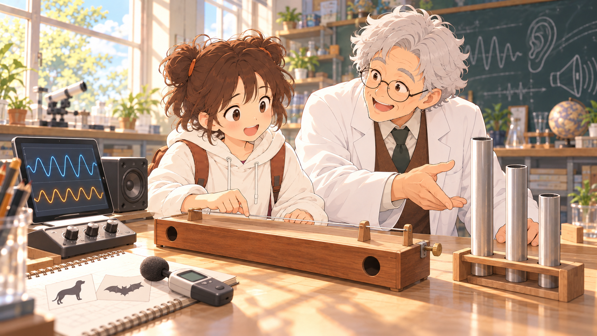

波動與聲音・單元3.3
首頁情境插圖：五張候選
最新第三輪：查看C01～C05：涵蓋更多學習道具與情境。本頁保留第一輪供對照。
延續單元1.1、1.2的做法，由小葵、阿公與桌上器材帶入故事，再連接下方的操作。五張使用同一組角色與器材，分別強調不同的觀察活動。
點擊圖片可開啟原圖。選好後，可直接指定編號及想調整的地方；目前正式課程首圖仍維持原樣。


圖中的物件，怎麼連接七個學習區塊？
| 學習區塊 | 共同的視覺線索 | 接到下方的操作或內容 |
|---|---|---|
| ① 響度與振幅 | 喇叭、旋鈕、波形平板 | 固定頻率，調整振幅並比較大小聲。 |
| ② 音調與頻率 | 同一套聲音觀察器材 | 調整頻率，比較同一段時間的振動次數與音調。 |
| ③ 琴弦的音調 | 有琴橋和調整裝置的木製琴弦箱 | 一次改變有效弦長或張力，再試聽。 |
| ④ 空氣柱的音調 | 同類、不同長度的開口發聲管 | 比較空氣柱長短與音調；延續同類開口管的條件。 |
| ⑤ 音色與波形 | 琴弦、管子、喇叭與平板 | 比較相同音高的不同聲音特色與波形。 |
| ⑥ 聽覺範圍 | 人物聆聽、狗與蝙蝠資料卡 | 從「聽得到嗎？」延伸到人耳可聽範圍與動物高頻聽覺。 |
| ⑦ 分貝的辨讀 | 桌上的聲級計與紀錄本 | 由描述大小聲接到聲級資料的比較；本區仍以參考資料辨讀。 |
| 結尾小測 | 整張聲音展示台 | 協助展示台設定指定的頻率、振幅與音色，呼應開場。 |
圖片用來帶入情境；精確的波形、頻率、聲級與模型關係，仍以學習區塊內的操作圖及數值呈現。